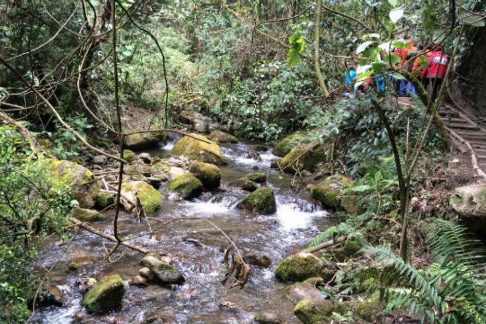
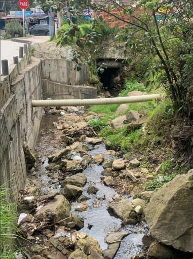
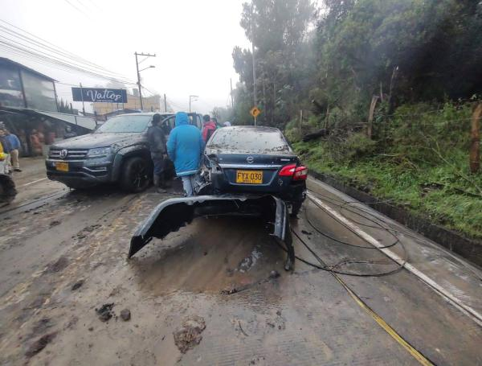

Antecedentes
El 12 de noviembre de 2022, el barrio San Luis Altos del Cabo fue escenario de una avenida torrencial provocada por intensas lluvias. Este evento resultó en la saturación de varias quebradas, cuyo caudal excesivo arrastró sedimentos, material y vegetación. La catástrofe tuvo graves consecuencias, afectando a múltiples predios, interrumpiendo la vía Bogotá - La Calera y pérdida de vidas.



Causas y afectaciones
La vulnerabilidad de San Luis Altos del Cabo se debe, en gran medida, a la naturaleza de su desarrollo urbano. Gran parte del sector se compone de asentamientos informales donde la construcción no siguió las pautas de planeación urbana adecuadas. Esto ha llevado a:
- Ocupación de zonas de riesgo:Construcción de predios en áreas inadecuadas y de alto riesgo.
- Falta de gestión hídrica:Las quebradas carecen de estudios hidrológicos actualizados y de una gestión adecuada.
- Deficiencias de drenaje:Ausencia total o insuficiencia de elementos de drenaje pluvial que puedan manejar volúmenes de agua extraordinarios.
Adicionalmente, se identificaron factores de riesgo específicos que contribuyeron al desastre:
- El IDIGER había advertido previamente sobre la presencia de vegetación con raíces débiles en los cauces, un material que fue fácilmente arrastrado por el flujo torrencial.
- Se detectó la ausencia de equipos y sistemas especializados para la prevención de desastres.
- Inspecciones en campo (apoyadas por herramientas como Google Earth) revelaron excavaciones y obras deficientemente ejecutadas en las riberas de las quebradas, lo que comprometió su estabilidad estructural.